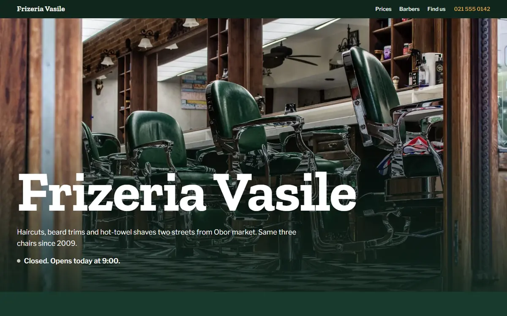
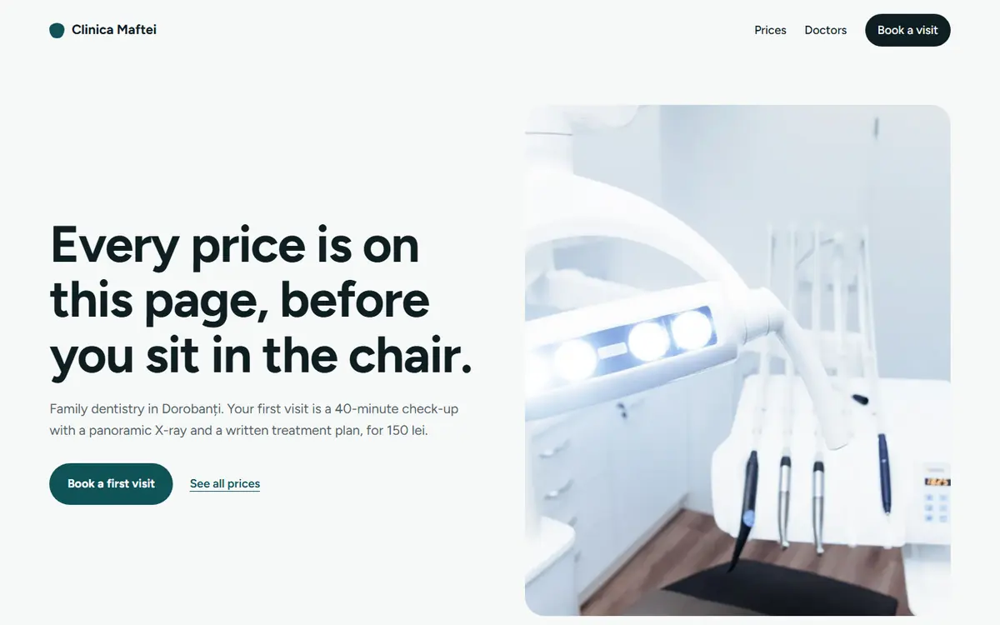
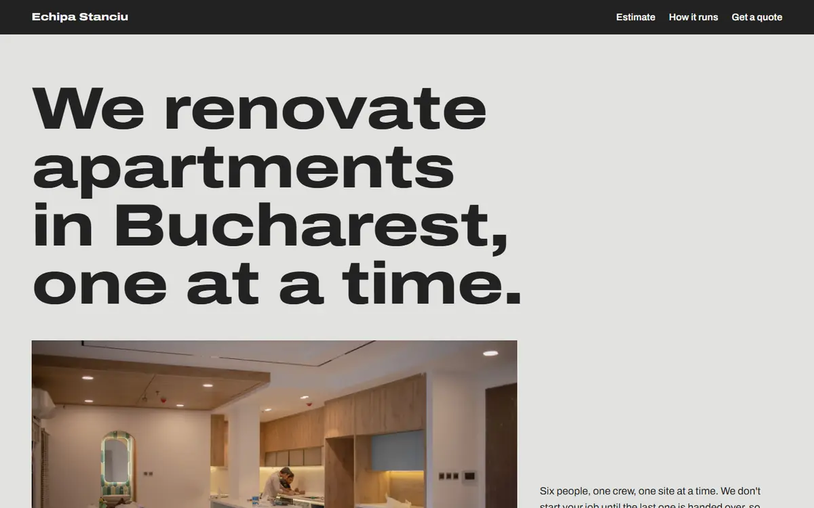
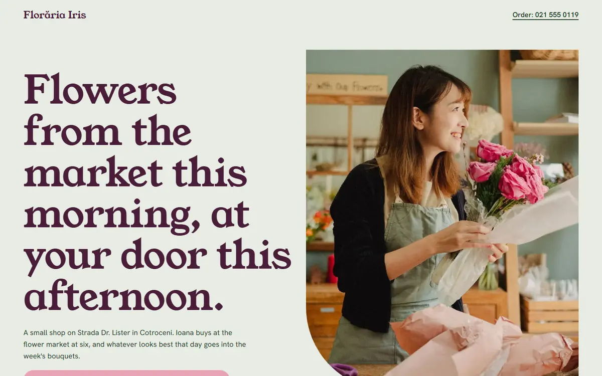
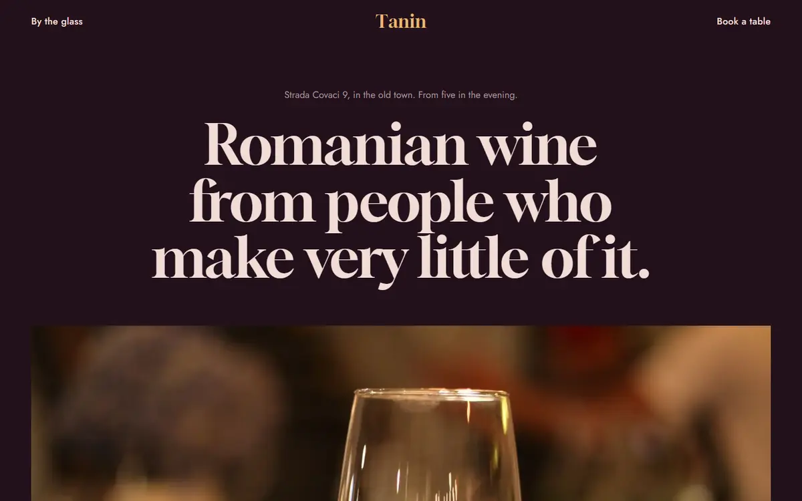
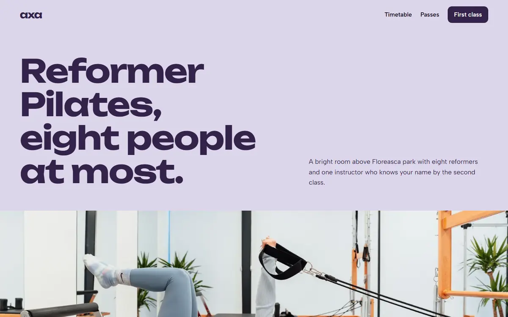
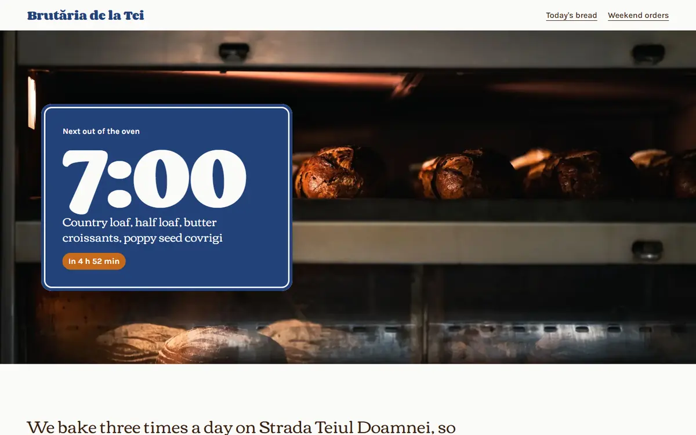
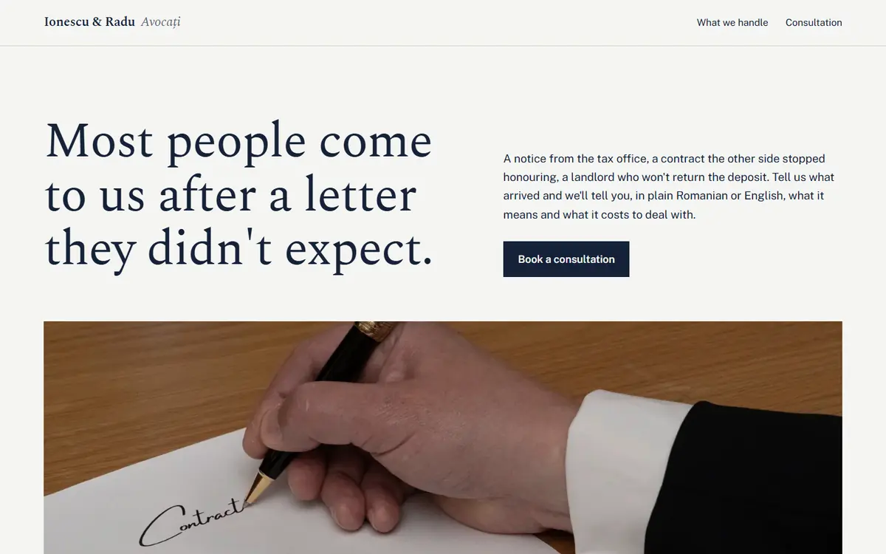

Un site bun n-ar trebui
să fie cea mai grea parte din administrarea afacerii tale
Proiectam și construim site-uri rapide, moderne și ușor de găsit pentru cafenele, contractori, saloane și studiouri, lansate în câteva zile, nu luni.
Exemple de site-uri live
Sunt site-uri exemplu complet funcționale, aceeași calitate și viteză cu care pornește fiecare proiect de client. Îți arată standardul minim pe care îl primești.

Atlas & Vine Architecture
Include un vizualizator 3D interactiv, încarci un model de clădire și vizitatorii îl pot explora în browser sau în AR pe telefon.

Sunny Side Up
Un site curat și rapid pentru o afacere locală, meniu sau grilă de servicii, program, locație și un formular de rezervare/contact.

Frizeria Vasile
Prețurile pe un panou cu litere și un rând care arată dacă frizeria e deschisă chiar acum.

Clinica Maftei
Toate prețurile tratamentelor pe pagină, cu căutare și formular de programare.

Echipa Stanciu
Un calculator de cost pe metru pătrat și programul lucrării, săptămână cu săptămână.

Florăria Iris
Buchetele săptămânii în trei mărimi, cu zonele de livrare în aceeași zi.

Tanin
Vinurile la pahar, cu note de degustare, schimbate în fiecare săptămână.

Axa Studio
Orarul săptămânii, cu locurile rămase la fiecare clasă.

Brutăria de la Tei
Cât mai e până iese următoarea tavă de pâine din cuptor, în timp real.

Ionescu & Radu
Serviciile explicate pornind de la ce i s-a întâmplat clientului, cu onorarii fixe.
1 / 10
Nu orice afacere are nevoie de același site
O cafenea și un studio de arhitectură vând lucruri foarte diferite, așa că abordarea se schimbă în consecință, în loc să forțăm pe toată lumea prin același calapod.
Site-uri personalizate pentru afaceri locale
Pentru cafenele, saloane, contractori și magazine: un site complet personalizat, construit în jurul pozelor, textelor și branding-ului tău reale, construit de la zero. Lansat în câteva zile, nu luni, și la fel de îngrijit.
Personalizat, cu 3D interactiv
Pentru studiouri de arhitectură, inginerie și design, unde lucrarea în sine este argumentul de vânzare: un site personalizat, scris manual, construit în jurul unei prezentări 3D interactive pe care vizitatorii o pot roti, mări și explora.
Suport continuu, nu doar o predare
Schimbări de meniu, poze noi, program sezonier, mici retușuri, la un mesaj distanță, nu o factură nouă pentru o favoare de cinci minute. Întreabă despre un abonament lunar simplu dacă preferi să nu te mai gândești deloc la asta.
Patru pași, de la început până la lansare
- 1
Apel scurt
15 minute pentru a înțelege afacerea ta și ce trebuie să facă site-ul.
- 2
Colectarea conținutului
Trimiți poze, texte și detalii. În rest ne ocupăm noi de tot.
- 3
Schiță & revizuire
Vezi un preview funcțional și ceri modificări înainte ca site-ul să fie publicat.
- 4
Lansare
Site-ul este publicat pe domeniul tău, cu un scurt ghid despre cum ceri actualizări.
Spune-ne despre afacerea ta
Completează formularul sau scrie-ne direct. Răspundem în cel mult o zi lucrătoare.
Email: ierostanescu@gmail.com
Telefon: +40 731 431 633
Bazat în: București, România